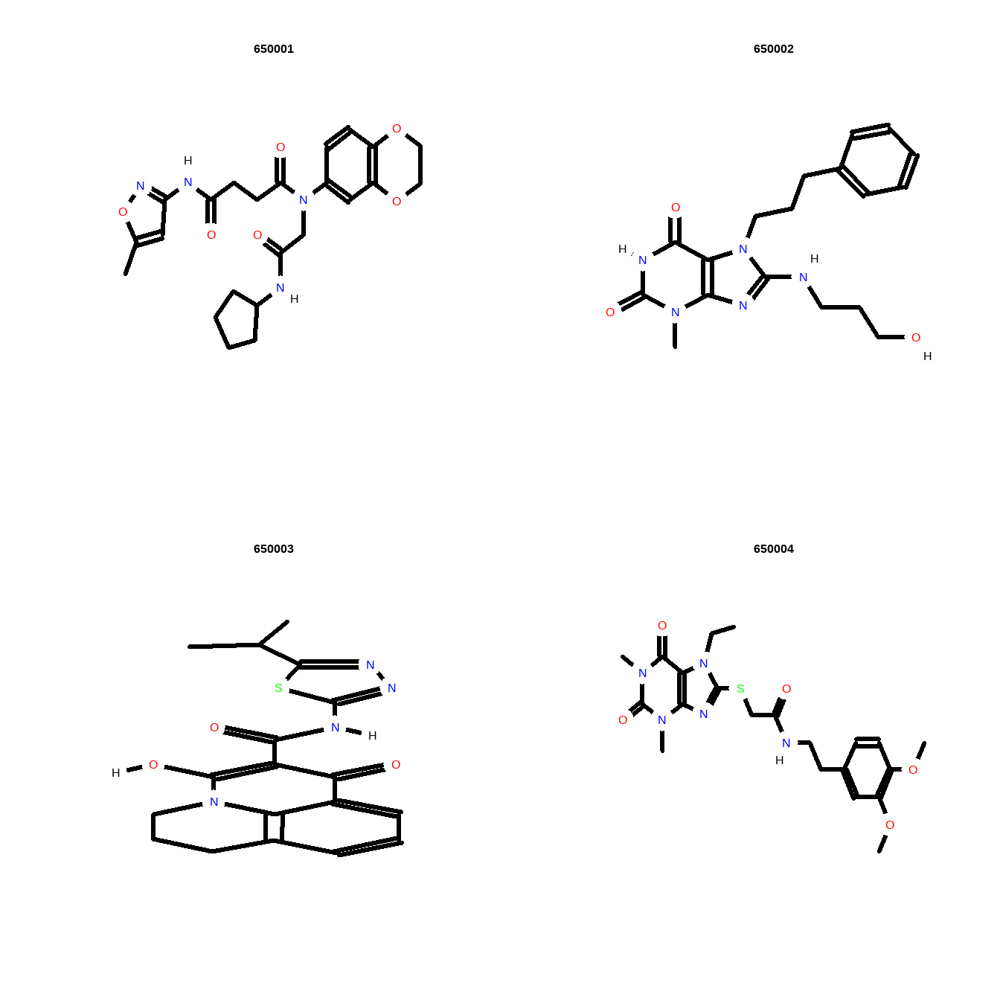

The R software for running ChemmineR can be downloaded from CRAN (http://cran.at.r-project.org/). The ChemmineR package can be installed from R with:
library("ChemmineR") # library(help="ChemmineR") # Lists all functions and classes
# vignette("ChemmineR") # Opens this PDF manual from R Class SDFset is list-like container for storing one or many objects of class SDF each containing the structure definition information of molecules provided by an SD/MOL file. The SDFset is the most important class in the ChemmmineR package for accessing and manipulating information stored in SD files.
data(sdfsample)
sdfset <- sdfsamplesdfset ## An instance of "SDFset" with 100 molecules sdfset[1:4]## An instance of "SDFset" with 4 molecules sdfset[[1]] ## An instance of "SDF"
##
## <<header>>
## Molecule_Name
## "650001"
## Source
## " -OEChem-07071010512D"
## Comment
## ""
## Counts_Line
## " 61 64 0 0 0 0 0 0 0999 V2000"
##
## <<atomblock>>
## C1 C2 C3 C5 C6 C7 C8 C9 C10 C11 C12 C13 C14 C15 C16
## O_1 7.0468 0.0839 0 0 0 0 0 0 0 0 0 0 0 0 0
## O_2 12.2708 1.0492 0 0 0 0 0 0 0 0 0 0 0 0 0
## ... ... ... ... ... ... ... ... ... ... ... ... ... ... ... ...
## H_60 1.8411 -1.5985 0 0 0 0 0 0 0 0 0 0 0 0 0
## H_61 2.6597 -1.2843 0 0 0 0 0 0 0 0 0 0 0 0 0
##
## <<bondblock>>
## C1 C2 C3 C4 C5 C6 C7
## 1 1 16 2 0 0 0 0
## 2 2 23 1 0 0 0 0
## ... ... ... ... ... ... ... ...
## 63 33 60 1 0 0 0 0
## 64 33 61 1 0 0 0 0
##
## <<datablock>> (33 data items)
## PUBCHEM_COMPOUND_CID PUBCHEM_COMPOUND_CANONICALIZED
## "650001" "1"
## PUBCHEM_CACTVS_COMPLEXITY PUBCHEM_CACTVS_HBOND_ACCEPTOR
## "700" "7"
##
## "..."# view(sdfset[1:4]) # Returns summarized content of many SDFs, not printed here
# as(sdfset[1:4], "list") # Returns complete content of many SDFs, not printed here Returns header block(s) from an object of class SDF or SDFset with named character vector or list of named character vectors
header(sdfset[1:4])## $CMP1
## Molecule_Name
## "650001"
## Source
## " -OEChem-07071010512D"
## Comment
## ""
## Counts_Line
## " 61 64 0 0 0 0 0 0 0999 V2000"
##
## $CMP2
## Molecule_Name
## "650002"
## Source
## " -OEChem-07071010512D"
## Comment
## ""
## Counts_Line
## " 49 51 0 0 0 0 0 0 0999 V2000"
##
## $CMP3
## Molecule_Name
## "650003"
## Source
## " -OEChem-07071010512D"
## Comment
## ""
## Counts_Line
## " 44 47 0 0 0 0 0 0 0999 V2000"
##
## $CMP4
## Molecule_Name
## "650004"
## Source
## " -OEChem-07071010512D"
## Comment
## ""
## Counts_Line
## " 59 61 0 0 0 0 0 0 0999 V2000"atomblock() returns atom block(s) from an object of class SDF or SDFse
# atomblock(sdfset[1:4]) # Not printed here Sub-set of atom block(s):
atomblock(sdfset[[1]])[1:4,] ## C1 C2 C3 C5 C6 C7 C8 C9 C10 C11 C12 C13 C14 C15 C16
## O_1 7.0468 0.0839 0 0 0 0 0 0 0 0 0 0 0 0 0
## O_2 12.2708 1.0492 0 0 0 0 0 0 0 0 0 0 0 0 0
## O_3 12.2708 3.1186 0 0 0 0 0 0 0 0 0 0 0 0 0
## O_4 7.9128 2.5839 0 0 0 0 0 0 0 0 0 0 0 0 0Returns bond block(s) from an object of class SDF or SDFset
bondblock(sdfset[[1]])[1:4,] ## C1 C2 C3 C4 C5 C6 C7
## 1 1 16 2 0 0 0 0
## 2 2 23 1 0 0 0 0
## 3 2 27 1 0 0 0 0
## 4 3 25 1 0 0 0 0datablock(sdfset[[1]])[1:4] ## PUBCHEM_COMPOUND_CID PUBCHEM_COMPOUND_CANONICALIZED
## "650001" "1"
## PUBCHEM_CACTVS_COMPLEXITY PUBCHEM_CACTVS_HBOND_ACCEPTOR
## "700" "7"Assigning compound IDs and keeping them unique:
cid(sdfset)[1:4] ## [1] "CMP1" "CMP2" "CMP3" "CMP4"sdfid(sdfset)[1:4] ## [1] "650001" "650002" "650003" "650004"Creates unique CMP names by appending a counter to each duplicatation set. The function can be used for any character vector.
unique_ids <- makeUnique(sdfid(sdfset))## [1] "No duplicates detected!"cid(sdfset) <- unique_ids Convert data blocks in SDFset to character matrix with datablock2ma(), then store its numeric columns as numeric matrix and its character columns as character matrix.
blockmatrix <- datablock2ma(datablocklist=datablock(sdfset)) Then Splits blockmatrix to numeric and character matrix
numchar <- splitNumChar(blockmatrix=blockmatrix) # Splits to numeric and character matrix Slice of numeric matrix
numchar[[1]][1:2,1:2] # Slice of numeric matrix ## PUBCHEM_COMPOUND_CID PUBCHEM_COMPOUND_CANONICALIZED
## 650001 650001 1
## 650002 650002 1Slice of character matrix
numchar[[2]][1:2,10:11] # Slice of character matrix ## PUBCHEM_MOLECULAR_FORMULA
## 650001 "C23H28N4O6"
## 650002 "C18H23N5O3"
## PUBCHEM_OPENEYE_CAN_SMILES
## 650001 "CC1=CC(=NO1)NC(=O)CCC(=O)N(CC(=O)NC2CCCC2)C3=CC4=C(C=C3)OCCO4"
## 650002 "CN1C2=C(C(=O)NC1=O)N(C(=N2)NCCCO)CCCC3=CC=CC=C3" propma <- data.frame(MF=MF(sdfset), MW=MW(sdfset), atomcountMA(sdfset))
propma[1:4, ] ## MF MW C H N O S F Cl
## 650001 C23H28N4O6 456.4916 23 28 4 6 0 0 0
## 650002 C18H23N5O3 357.4069 18 23 5 3 0 0 0
## 650003 C18H18N4O3S 370.4255 18 18 4 3 1 0 0
## 650004 C21H27N5O5S 461.5346 21 27 5 5 1 0 0datablock(sdfset) <- propma
datablock(sdfset[1]) ## $`650001`
## MF MW C H N O
## "C23H28N4O6" "456.4916" "23" "28" "4" "6"
## S F Cl
## "0" "0" "0"grepSDFset a function for string searching in SDFset containers.
grepSDFset("650001", sdfset, field="datablock", mode="subset") ## $`650001`
## An instance of "SDF"
##
## <<header>>
## Molecule_Name
## "650001"
## Source
## " -OEChem-07071010512D"
## Comment
## ""
## Counts_Line
## " 61 64 0 0 0 0 0 0 0999 V2000"
##
## <<atomblock>>
## C1 C2 C3 C5 C6 C7 C8 C9 C10 C11 C12 C13 C14 C15 C16
## O_1 7.0468 0.0839 0 0 0 0 0 0 0 0 0 0 0 0 0
## O_2 12.2708 1.0492 0 0 0 0 0 0 0 0 0 0 0 0 0
## ... ... ... ... ... ... ... ... ... ... ... ... ... ... ... ...
## H_60 1.8411 -1.5985 0 0 0 0 0 0 0 0 0 0 0 0 0
## H_61 2.6597 -1.2843 0 0 0 0 0 0 0 0 0 0 0 0 0
##
## <<bondblock>>
## C1 C2 C3 C4 C5 C6 C7
## 1 1 16 2 0 0 0 0
## 2 2 23 1 0 0 0 0
## ... ... ... ... ... ... ... ...
## 63 33 60 1 0 0 0 0
## 64 33 61 1 0 0 0 0
##
## <<datablock>> (9 data items)
## MF MW C H
## "C23H28N4O6" "456.4916" "23" "28" "..."grepSDFset("650001", sdfset, field="datablock", mode="index") ## 1 1 1 1 1 1 1 1 1
## 1 2 3 4 5 6 7 8 9 write.SDF(sdfset[1:4], file="sub.sdf", sig=TRUE) plot(sdfset[1:4], print=FALSE) # Plots structures to R graphics device
sdf.visualize(sdfset[1:4]) # Compound viewing in web browser ## [1] "http://chemmine.ucr.edu/ChemmineR/showJob/81df37f5-d15c-4be8-9248-7aa9d02d71ef"